Chapter 9 ggplot visualization
9.1 ggplot 옵션 익히기
9.1.1 mpg 데이터
자동차 모델별 기술스팩 정보를 가지고 있는 데이터셋
| 항목 | 의미 |
|---|---|
| manufacturer | 자동차 제조사 |
| model | 모델이름 |
| displ | 리터당 배기량 |
| year | 생산연도 |
| cyl | 실린더 개수 |
| trans | 자동/수동 기어 정보 |
| drv | f:전륜구동, r=후륜구동, 4=4wd |
| cty | 갤런당 시내주행 연비 |
| hwy | 겔런당 고속도로 연비 |
| fl | 연료타입 |
| class | 자동차 타입 |
9.1.2 기본 그래프 생성 문법
ggplot(data = <DATA>) +
<GEOM_FUNCTION>(mapping = aes(<MAPPINGS>))- 이번장에 사용될 패키지 설치
- 파이프 라인 연산처럼 ggplot은 ‘+’ 연산을 통해 그래프 객체 및 옵션 등을 추 가 할 수 있습니다.
- mpg 데이터셋의 각 컬럼별 의미를 확인해 봅시다.
## Warning: package 'ggplot2' was built under R version 4.0.2## Warning: package 'tibble' was built under R version 4.0.2## Warning: package 'tidyr' was built under R version 4.0.2## Warning: package 'readr' was built under R version 4.0.2## Warning: package 'dplyr' was built under R version 4.0.2## # A tibble: 234 x 11
## manufacturer model displ year cyl trans drv cty hwy fl class
## <chr> <chr> <dbl> <int> <int> <chr> <chr> <int> <int> <chr> <chr>
## 1 audi a4 1.8 1999 4 auto(l… f 18 29 p comp…
## 2 audi a4 1.8 1999 4 manual… f 21 29 p comp…
## 3 audi a4 2 2008 4 manual… f 20 31 p comp…
## 4 audi a4 2 2008 4 auto(a… f 21 30 p comp…
## 5 audi a4 2.8 1999 6 auto(l… f 16 26 p comp…
## 6 audi a4 2.8 1999 6 manual… f 18 26 p comp…
## 7 audi a4 3.1 2008 6 auto(a… f 18 27 p comp…
## 8 audi a4 quat… 1.8 1999 4 manual… 4 18 26 p comp…
## 9 audi a4 quat… 1.8 1999 4 auto(l… 4 16 25 p comp…
## 10 audi a4 quat… 2 2008 4 manual… 4 20 28 p comp…
## # … with 224 more rows
9.1.3 ggplot 문법 기본
- scipen 은 지수형 숫자 표기식 설정 입니다. default 값은 ‘0’ 이며 전체 세션에 영향을 미칩 니다. scipen = x 에서 x를 큰숫자로 입력할 경우 지수형 숫자 표기가 disable 됩니다.
- scipen 은 전체 세션에 영향을 미치는 반면, format(변수명, scientific = FALSE) 은 해당 그래프에서 지수형 숫자 표기를 disable 합니다.
#Setup
options(scipen=999) # 숫자표현시 지수 표기법을 끕니다.(예 : 1e+08)
midwest <- read_csv("http://goo.gl/G1K41K") # 데이터를 읽습니다.
ggplot(midwest, aes(x=area, y=poptotal)) # 그래프는 그리지 않고 축을 참조해서 캔버스만 만듭니다.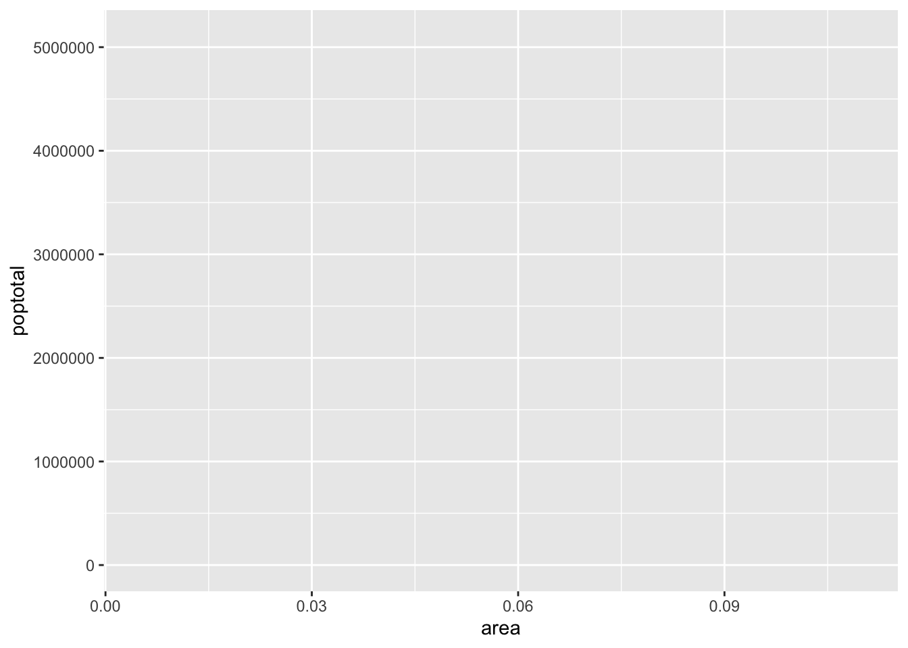
9.1.5 선그래프 추가하기
- method 의 종류
| method | 설명 |
|---|---|
| lm | 선형 모형(linear model) |
| glm | 일반화 선형 모형(generalized linear model) |
| gam | 일반화 가법 모형(generalized additive model) |
| rlm | robust linear model |
| loess | 비모수회귀 모형 |
## `geom_smooth()` using formula 'y ~ x'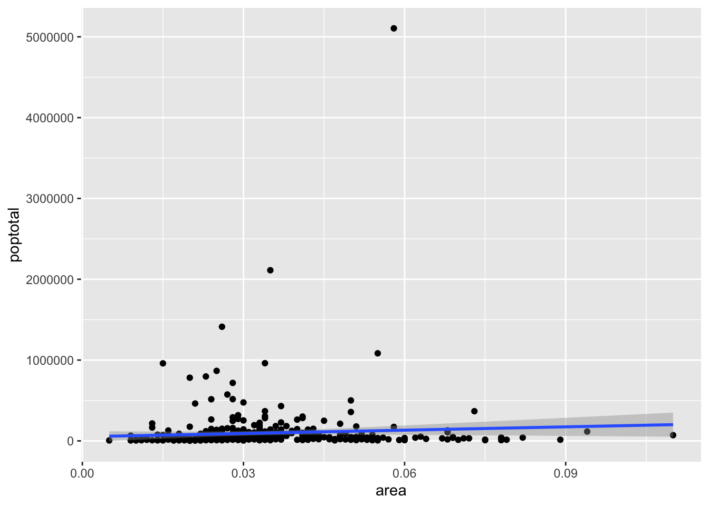
9.1.6 X, Y 각 축에 값 제한 하기
- xlim, ylim 함수를 이용해서 축의 값 범위를 제한 할 수 있다.
midwest %>% ggplot(aes(x=area, y=poptotal)) +
geom_point() +
geom_smooth(method="lm") +
xlim(c(0, 0.1)) + ylim(c(0, 1000000)) # limit 을 벗엇난 값은 삭제함## `geom_smooth()` using formula 'y ~ x'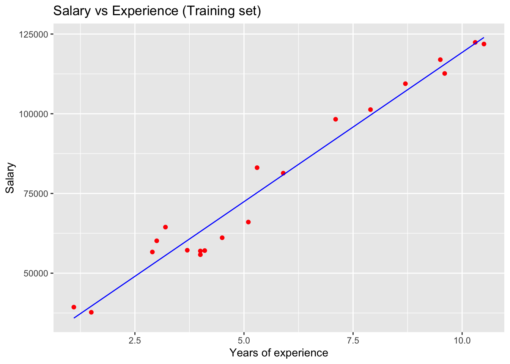
9.1.7 그래프 확대 하기
- coord_cartesian 의 매개변수로 xlim,ylim 을 사용하지만 limit 을 넘어가는 실제 데이터는 삭제하지 않습니다.
- 단순히 xlim, ylim 에 선언된 대로 확대만 합니다.
midwest %>% ggplot(aes(x=area, y=poptotal)) +
geom_point() +
geom_smooth(method="lm") +
coord_cartesian(xlim=c(0,0.1), ylim=c(0, 2000000)) # 값은 삭제하지 않고 유지. 화면에만 보이지 않음.## `geom_smooth()` using formula 'y ~ x'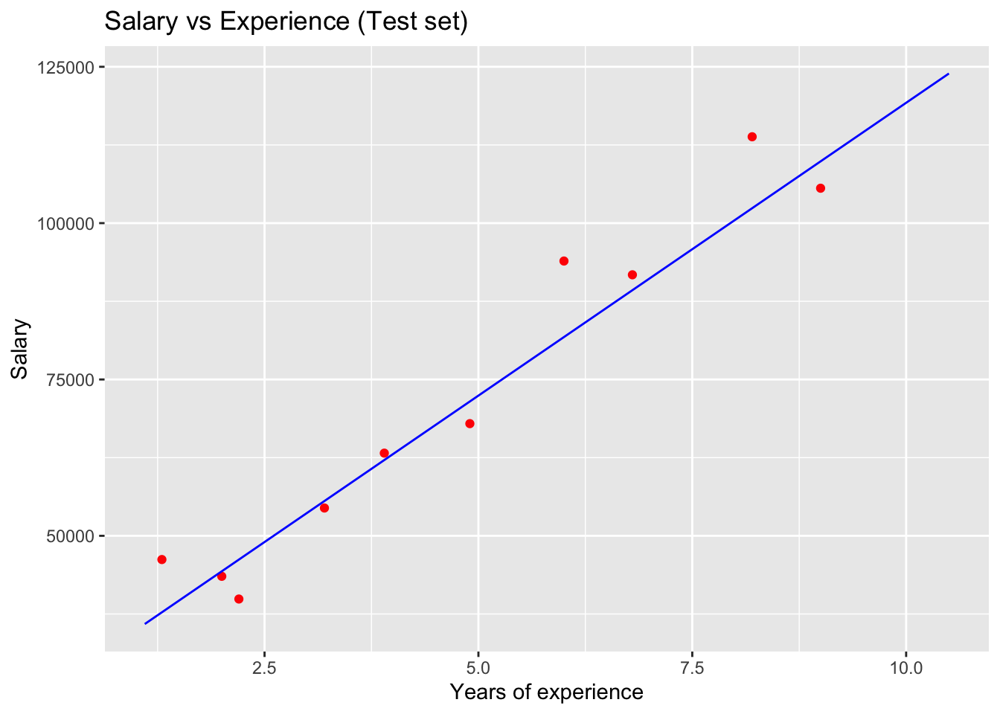
9.1.8 타이틀 및 축라벨 변경
midwest %>% ggplot(aes(x=area, y=poptotal)) +
geom_point() +
geom_smooth(method="lm") +
coord_cartesian(xlim=c(0,0.1), ylim=c(0, 1000000)) +
labs(title="Area Vs Population", subtitle="From midwest dataset", y="Population", x="Area", caption="Midwest Demographics")## `geom_smooth()` using formula 'y ~ x'
9.1.9 색상과 점의 크기 조정
- labs 함수로 제목/소제목/축레이블/캡션을 지정 할 수 있습니다.
library(ggplot2)
ggplot(midwest, aes(x=area, y=poptotal)) +
geom_point(col="steelblue", size=3) + # 점에대해 크기와 색상을 지정
geom_smooth(method="lm", col="firebrick") + # 선의 색상을 변경
coord_cartesian(xlim=c(0, 0.1), ylim=c(0, 1000000)) +
labs(title="Area Vs Population", subtitle="From midwest dataset", y="Population", x="Area", caption="Midwest Demographics")## `geom_smooth()` using formula 'y ~ x'
9.1.10 조건기반 색상 표시
- col 인자에 조건식을 사용하여 색상을 지정할 수 있습니다.
- 주의 할 점은 col 컬럼의 조건식에서 컬럼명을 테이블$컬럼명으로 명기 해야함.
library(ggplot2)
midwest %>% ggplot(aes(x=area, y=poptotal)) +
geom_point(size=3, col = ifelse(midwest$poptotal > 500000,'red','green')) + # 점에대해 크기와 색상을 지정
geom_smooth(method="lm", col = 'firebrick') + # 선의 색상을 변경
coord_cartesian(xlim=c(0, 0.1), ylim=c(0, 1000000)) +
labs(title="Area Vs Population", subtitle="From midwest dataset", y="Population", x="Area", caption="Midwest Demographics")## `geom_smooth()` using formula 'y ~ x'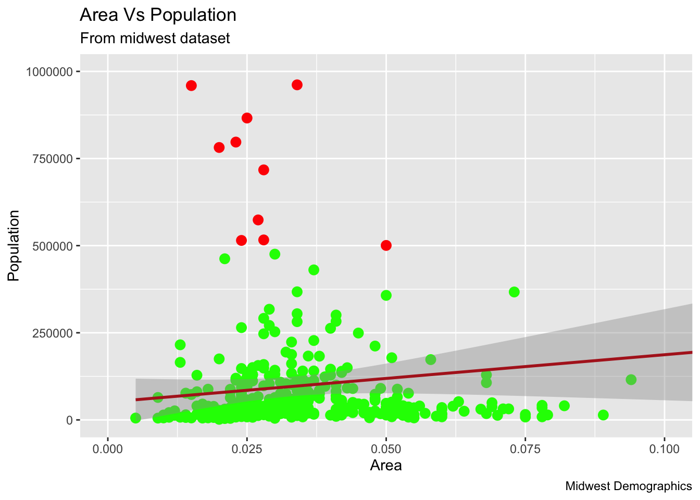
9.1.11 그룹별로 색상 표시하기
- aes 함수의 col 인자에 그룹핑 할 컬럼명을 선언하면 됩니다. => geom 함수에서 사용 할 경우
- color 인자에 그룹핑 할 컬럼을 명기 해도 됩니다. => ggplot 함수에서 사용할 경우
9.1.12 col 인자에 명기 하는 경우
library(ggplot2)
midwest %>% ggplot(aes(x=area, y=poptotal)) +
geom_point(aes(col=state), size=3) +
geom_smooth(method="lm", col="firebrick", size=2) +
coord_cartesian(xlim=c(0, 0.1), ylim=c(0, 1000000)) +
labs(title="Area Vs Population", subtitle="From midwest dataset", y="Population", x="Area", caption="Midwest Demographics")## `geom_smooth()` using formula 'y ~ x'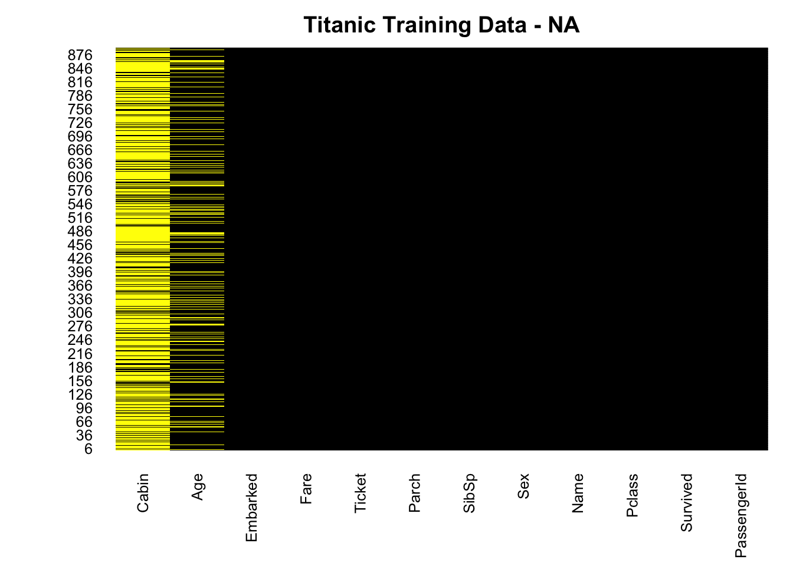
9.1.12.1 class 인자에 명기하는 경우
library(ggplot2)
midwest %>% ggplot(aes(x=area, y=poptotal, color = state)) +
geom_point(size=3) +
geom_smooth(method="lm", col="firebrick", size=2) +
coord_cartesian(xlim=c(0, 0.1), ylim=c(0, 1000000)) +
labs(title="Area Vs Population", subtitle="From midwest dataset", y="Population", x="Area", caption="Midwest Demographics")## `geom_smooth()` using formula 'y ~ x'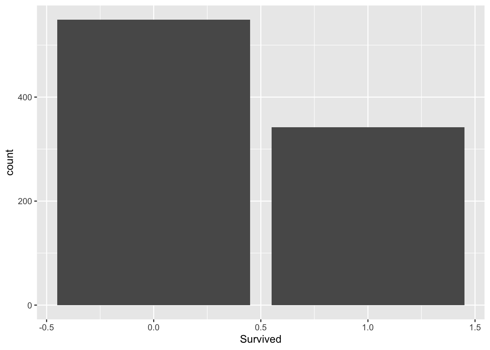
9.1.13 Mark 의 모양 변경
- shape 인자를 ggplot 함수의 인자에 넣고 변수명을 맵핑 하면 됩니다.
library(ggplot2)
midwest %>% ggplot(aes(x=area, y=poptotal, shape = state, color = state)) +
geom_point(size=3) +
geom_smooth(inherit.aes = TRUE,method="lm", col="firebrick", size=2) +
coord_cartesian(xlim=c(0, 0.1), ylim=c(0, 1000000)) +
labs(title="Area Vs Population", subtitle="From midwest dataset", y="Population", x="Area", caption="Midwest Demographics")## `geom_smooth()` using formula 'y ~ x'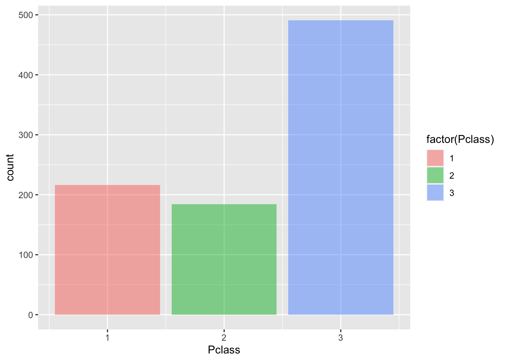
9.1.14 Legend 없애기
library(ggplot2)
midwest %>% ggplot(aes(x=area, y=poptotal)) +
geom_point(aes(col=state), size=3) +
geom_smooth(method="lm", col="firebrick", size=2) +
coord_cartesian(xlim=c(0, 0.1), ylim=c(0, 1000000)) +
labs(title="Area Vs Population", subtitle="From midwest dataset", y="Population", x="Area", caption="Midwest Demographics") +
theme(legend.position="None") ## `geom_smooth()` using formula 'y ~ x'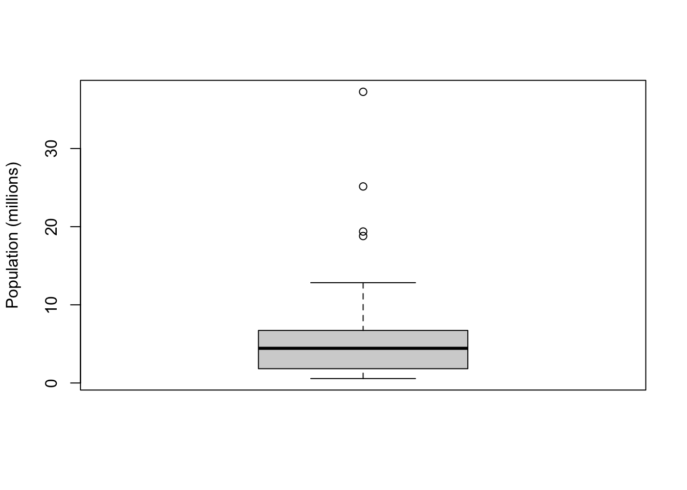
9.1.15 Legend 테마 변경하기
library(ggplot2)
midwest %>% ggplot(aes(x=area, y=poptotal)) +
geom_point(aes(col=state), size=3) +
geom_smooth(method="lm", col="firebrick", size=2) +
coord_cartesian(xlim=c(0, 0.1), ylim=c(0, 1000000)) +
labs(title="Area Vs Population", subtitle="From midwest dataset", y="Population", x="Area", caption="Midwest Demographics") +
scale_colour_brewer(palette = "Set1")## `geom_smooth()` using formula 'y ~ x'
9.1.16 색상 팔레트 종류
## maxcolors category colorblind
## BrBG 11 div TRUE
## PiYG 11 div TRUE
## PRGn 11 div TRUE
## PuOr 11 div TRUE
## RdBu 11 div TRUE
## RdGy 11 div FALSE
## RdYlBu 11 div TRUE
## RdYlGn 11 div FALSE
## Spectral 11 div FALSE
## Accent 8 qual FALSE9.1.17 축간격 조정 하기
- scale_x_continuous 함수를 사용하여 축간격을 조정 할 수 있습니다.
- 사용법 : scale_x_continuous(시작값, 종료값, 간격)
library(ggplot2)
midwest %>% ggplot(aes(x=area, y=poptotal)) +
geom_point(aes(col=state), size=3) +
geom_smooth(method="lm", col="firebrick", size=2) +
coord_cartesian(xlim=c(0, 0.1), ylim=c(0, 1000000)) +
labs(title="Area Vs Population", subtitle="From midwest dataset", y="Population", x="Area", caption="Midwest Demographics") +
scale_x_continuous(breaks=seq(0, 0.1, 0.01))## `geom_smooth()` using formula 'y ~ x'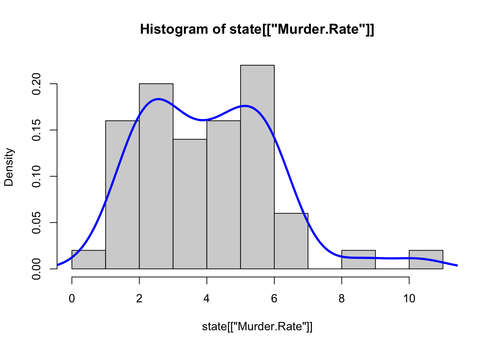
9.1.18 X축 역변환 하기
library(ggplot2)
midwest %>% ggplot(aes(x=area, y=poptotal)) +
geom_point(aes(col=state), size=3) +
geom_smooth(method="lm", col="firebrick", size=2) +
coord_cartesian(xlim=c(0, 0.1), ylim=c(0, 1000000)) +
labs(title="Area Vs Population", subtitle="From midwest dataset", y="Population", x="Area", caption="Midwest Demographics") +
scale_x_reverse()## `geom_smooth()` using formula 'y ~ x'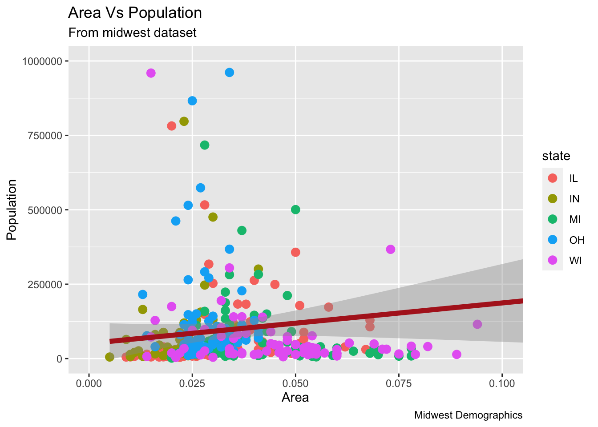
9.1.19 축라벨에 커스터마이징
library(ggplot2)
midwest %>% ggplot(aes(x=area, y=poptotal)) +
geom_point(aes(col=state), size=3) +
geom_smooth(method="lm", col="firebrick", size=2) +
coord_cartesian(xlim=c(0, 0.1), ylim=c(0, 1000000)) +
labs(title="Area Vs Population", subtitle="From midwest dataset", y="Population", x="Area", caption="Midwest Demographics") +
scale_x_continuous(breaks=seq(0, 0.1, 0.01), labels = sprintf("%.2f%%", seq(0, 0.1, 0.01))) +
scale_y_continuous(breaks=seq(0, 1000000, 200000), labels = function(x){paste0(x/1000, 'K')})## `geom_smooth()` using formula 'y ~ x'9.1.20 테마를 사용해서 한번에 변경
- theme_set() 함수를 사용해서 테마를 설정 할 수 있습니다.
- 내장 테마 종류
| 테마명 | 테마설명 |
|---|---|
| theme_gray() | ggplot2 의 기본 테마 |
| theme_bw() | dark on light 테마 |
| theme_linedraw() | 하얀 바탕에 검정 라인을 사용한 테마 |
| theme_light() | linedraw 와 유사하지만, Gray 스케일 사용 |
| theme_dark() | 배경색을 어둡게 한 테마 |
| theme_minimal() | 최소한의 배경을 사용하고 까끔한 테마 |
| theme_classic() | 그리드 라인이 없는 테마 |
| theme_void | 테마적용하지 않음 |
9.1.20.1 BW Theme
midwest %>% ggplot(aes(x=area, y=poptotal)) +
geom_point(aes(col=state), size=3) +
geom_smooth(method="lm", col="firebrick", size=2) +
coord_cartesian(xlim=c(0, 0.1), ylim=c(0, 1000000)) +
labs(title="Area Vs Population", subtitle="From midwest dataset", y="Population", x="Area", caption="Midwest Demographics") +
theme_bw() + labs(subtitle="BW Theme")## `geom_smooth()` using formula 'y ~ x'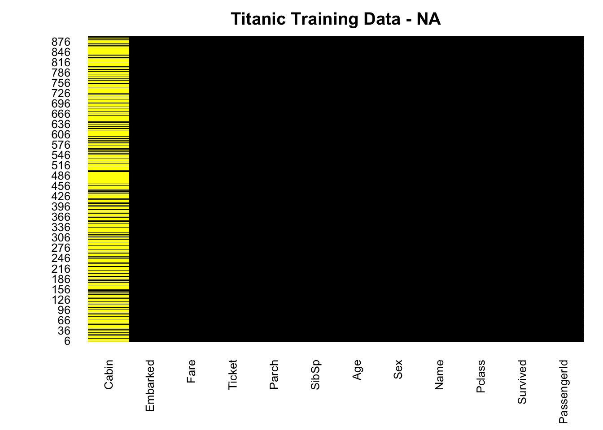
9.1.20.2 Classic Theme
midwest %>% ggplot(aes(x=area, y=poptotal)) +
geom_point(aes(col=state), size=3) +
geom_smooth(method="lm", col="firebrick", size=2) +
coord_cartesian(xlim=c(0, 0.1), ylim=c(0, 1000000)) +
labs(title="Area Vs Population", subtitle="From midwest dataset", y="Population", x="Area", caption="Midwest Demographics") +
theme_classic() + labs(subtitle="Classic Theme")## `geom_smooth()` using formula 'y ~ x'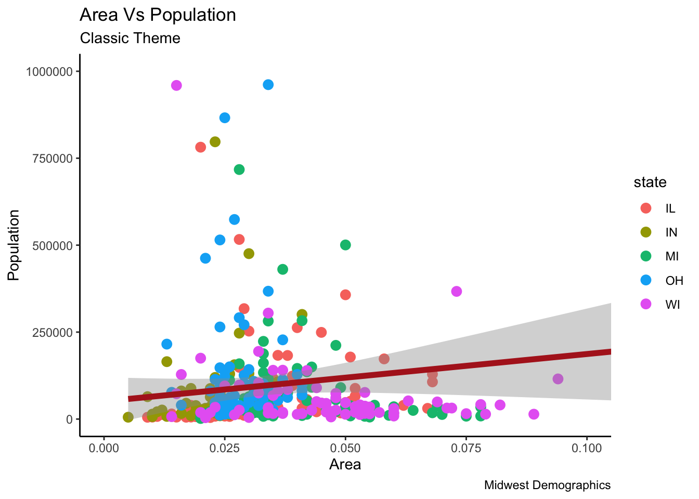
9.1.21 Scatter Plot(산점도)
- 기본적인 산점도 차트
midwest %>% ggplot(aes(x=area, y=poptotal)) +
geom_point(aes(col=state, size=popdensity)) +
geom_smooth(method="loess", se=F) +
xlim(c(0, 0.1)) +
ylim(c(0, 500000)) +
labs(subtitle="Area Vs Population",
y="Population",
x="Area",
title="Scatterplot",
caption = "Source: midwest")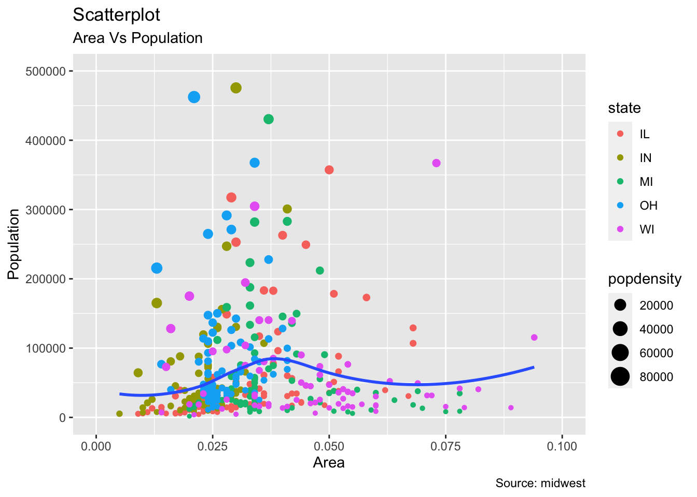
- 산점도 차트에 선택된 데이터 표시하기
#install.packages("ggalt")
library(ggalt)
midwest_select <- midwest %>% filter(poptotal > 350000 &
poptotal <= 500000 &
midwest$area > 0.01 &
midwest$area < 0.1
)
# Plot
midwest %>% ggplot(aes(x=area, y=poptotal)) +
geom_point(aes(col=state, size=popdensity)) + # 산점도 그래프
geom_smooth(method="loess", se=F) +
xlim(c(0, 0.1)) +
ylim(c(0, 500000)) + # 라인그래프 추가
geom_encircle(aes(x=area, y=poptotal),
data=midwest_select,
color="red",
size=2,
expand=0.08) + # 각종 제목 및 설명 추가
labs(subtitle="Area Vs Population",
y="Population",
x="Area",
title="Scatterplot + Encircle",
caption="Source: midwest")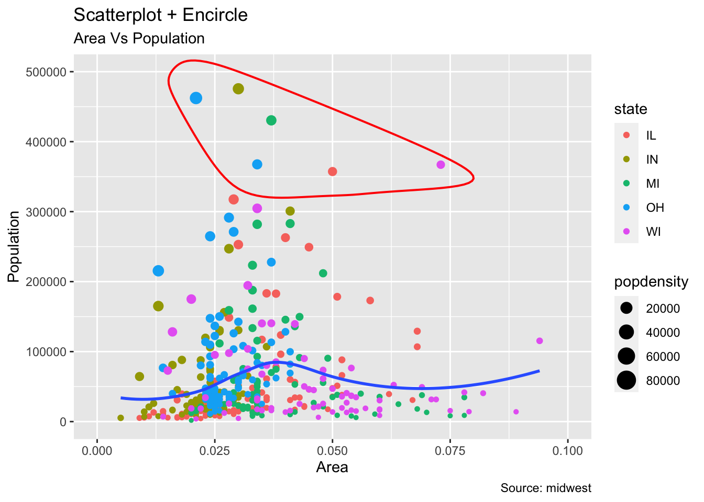
9.1.22 jitter plot
- 산점도로 그래프를 그릴때 데이터가 많아 겹치는 점이 생길수 있습니다. 이럴경우 전체적인 데이터의 분포를 확인 할 수는 없습니다.
- 좀더 데이터의 분포를 정확하게 확인하기 위해 jiiter plot 을 사용 합니다.
- jitter plot 은 무작위적인 노이즈를 추가해서 동일한 위치점 점들을 살짝 비틀어 표시합니다.
산점도와 비교해서 그래프를 출력해보세요 geom_jitter 를 geom_point 로 바꾸면 됩니다.
# load package and data
library(ggplot2)
#data(mpg, package="ggplot2")
# mpg <- read.csv("http://goo.gl/uEeRGu")
# Scatterplot
theme_set(theme_bw()) # pre-set the bw theme.
g <- ggplot(mpg, aes(cty, hwy))
g + geom_jitter(width = .5, size=1) +
labs(subtitle="mpg: city vs highway mileage",
y="hwy",
x="cty",
title="Jittered Points")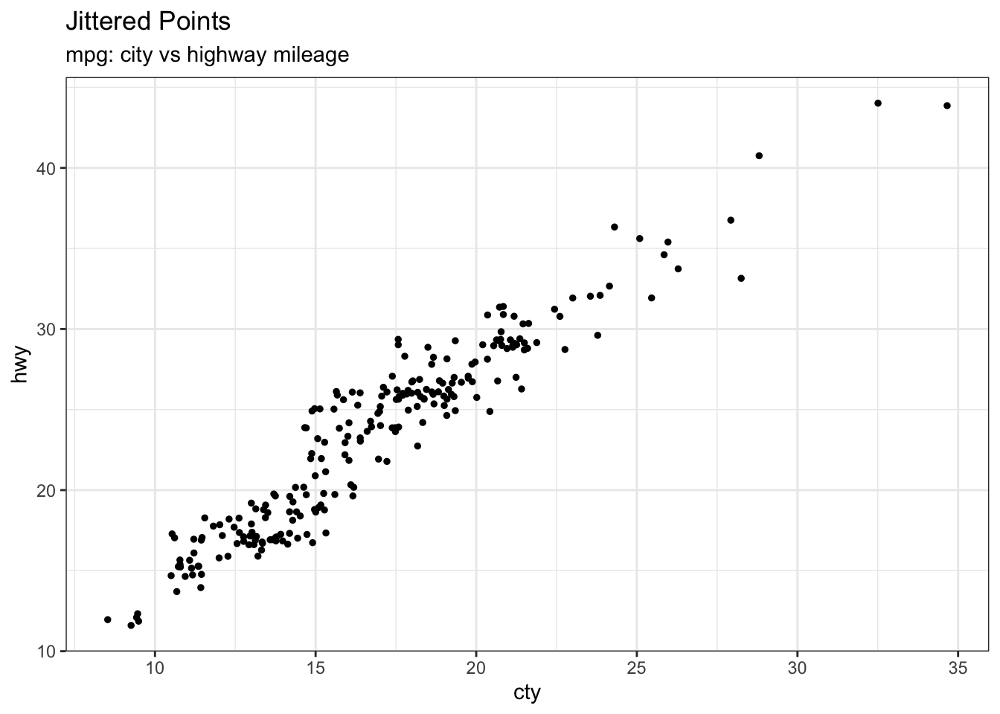
9.1.23 Count Plot
- 산점도의 데이터 분포를 정확하게 확인 하기 위한 방법으로 jitter plot 외에 Count Plot 이 있습니다.
- 분포 집중도에 따라 점의 크기가 달라 집니다.
theme_set(theme_bw()) # 테마 설정
mpg %>% ggplot(aes(cty, hwy)) +
geom_count(col="tomato3", show.legend=F) +
labs(subtitle="mpg: city vs highway mileage",
y="hwy",
x="cty",
title="Counts Plot")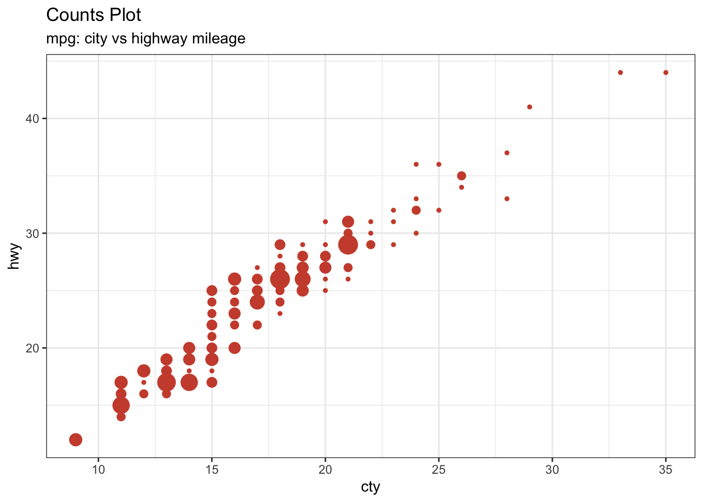
9.1.24 가장자리 분포 그래프 추가
- 데이터의 분포를 좀더 정확하게 확인 하기 위해 각축의 데이터의 분포를 Histogram 이나 Bixplot 으로 표시 할 수 있습니다.
## Warning: package 'ggExtra' was built under R version 4.0.2library(grid)
theme_set(theme_bw())
mpg_select <- mpg[mpg$hwy >= 35 & mpg$cty > 27, ]
g <- mpg %>% ggplot(aes(cty, hwy)) +
geom_count() +
geom_smooth(method="lm", se=F)
ggMarginal(g, type = "histogram", fill="transparent") ## `geom_smooth()` using formula 'y ~ x'
## `geom_smooth()` using formula 'y ~ x'## `geom_smooth()` using formula 'y ~ x'
## `geom_smooth()` using formula 'y ~ x'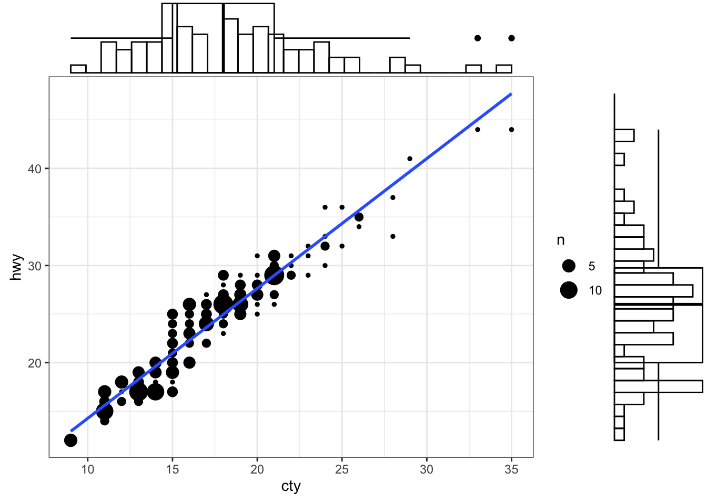
9.1.25 Correlogram
- correlogram plot 은 모든 변수관의 상관 관걔를 한눈에 확인 할수 있는 그래프 입니다.
- scale_colour_gradientn 함수를 이용해 팔레트를 지정합니다.
#devtools::install_github("kassambara/ggcorrplot")
#install.packages('extrafont')
library(ggcorrplot)## Warning: package 'ggcorrplot' was built under R version 4.0.2## mpg cyl disp hp drat wt qsec vs am gear carb
## mpg 1.0 -0.9 -0.8 -0.8 0.7 -0.9 0.4 0.7 0.6 0.5 -0.6
## cyl -0.9 1.0 0.9 0.8 -0.7 0.8 -0.6 -0.8 -0.5 -0.5 0.5
## disp -0.8 0.9 1.0 0.8 -0.7 0.9 -0.4 -0.7 -0.6 -0.6 0.4
## hp -0.8 0.8 0.8 1.0 -0.4 0.7 -0.7 -0.7 -0.2 -0.1 0.7
## drat 0.7 -0.7 -0.7 -0.4 1.0 -0.7 0.1 0.4 0.7 0.7 -0.1
## wt -0.9 0.8 0.9 0.7 -0.7 1.0 -0.2 -0.6 -0.7 -0.6 0.4
## qsec 0.4 -0.6 -0.4 -0.7 0.1 -0.2 1.0 0.7 -0.2 -0.2 -0.7
## vs 0.7 -0.8 -0.7 -0.7 0.4 -0.6 0.7 1.0 0.2 0.2 -0.6
## am 0.6 -0.5 -0.6 -0.2 0.7 -0.7 -0.2 0.2 1.0 0.8 0.1
## gear 0.5 -0.5 -0.6 -0.1 0.7 -0.6 -0.2 0.2 0.8 1.0 0.3
## carb -0.6 0.5 0.4 0.7 -0.1 0.4 -0.7 -0.6 0.1 0.3 1.0# 그래프 그리기 (팔레트 이용)
ggcorrplot(corr, hc.order = TRUE,
type = "lower",
lab = TRUE,
lab_size = 3,
method="circle",
title="변수상관관계",
ggtheme=theme_bw) +
scale_colour_gradientn(colours=rainbow(4))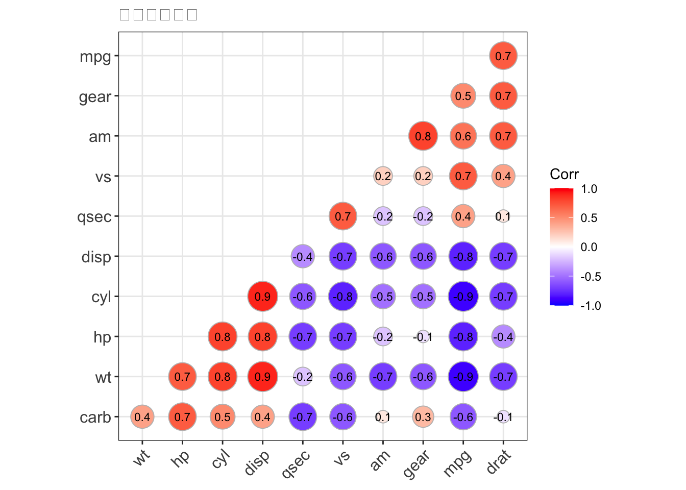
9.1.26 Bar 그래프
- mpg 데이터 셋에서 해당 자동차 제조회사 소속의 모든 자동자 에 대한 평균 시내주행 연비를 비교
cty_mpg <- mpg %>%
group_by(manufacturer) %>% # 제조사별 그룹핑
summarise(delay = mean(cty,na.rm=TRUE)) # 평균 시내주행 연비 계산## `summarise()` ungrouping output (override with `.groups` argument)colnames(cty_mpg) <- c("make", "mileage") # 컬럼 이름 변경
cty_mpg <- arrange(cty_mpg, mileage) # 정렬
# 제조사를 factor 로 지정 (정렬을 하고 factor 레벨을 정하면 그것이 곧 순서가 됨)
# factor 를 지정한 이후에 정렬을 하게 되면 그래프가 어떻게 바뀌는지 테스트 해보세요
# reorder 함수를 사용해서 ggplot 함수내에서 정렬도 가능 합니다.
cty_mpg$make <- factor(cty_mpg$make, levels = cty_mpg$make)
head(cty_mpg, 4)## # A tibble: 4 x 2
## make mileage
## <fct> <dbl>
## 1 lincoln 11.3
## 2 land rover 11.5
## 3 dodge 13.1
## 4 mercury 13.2theme_set(theme_bw())
# 그래프 그리기
ggplot(cty_mpg, aes(x=make, y=mileage)) +
geom_bar(stat="identity", width=.5, fill="tomato3") +
labs(title="Ordered Bar Chart",
subtitle="Make Vs Avg. Mileage",
caption="source: mpg") +
theme(axis.text.x = element_text(angle=65, vjust=0.6))- reorder 함수를 사용해서 정렬 하는 경우
cty_mpg <- mpg %>%
group_by(manufacturer) %>% # 제조사별 그룹핑
summarise(delay = mean(cty,na.rm=TRUE)) # 평균 시내주행 연비 계산## `summarise()` ungrouping output (override with `.groups` argument)colnames(cty_mpg) <- c("make", "mileage") # 컬럼 이름 변경
cty_mpg$make <- factor(cty_mpg$make, levels = cty_mpg$make) # 정렬하지 않고 factor 지정
# reorder 함수를 사용해서 정렬 (mileage 앞에 '-' 를 붙이면 어덯게 될까요?)
ggplot(cty_mpg, aes(x=reorder(make, mileage), y=mileage)) +
geom_bar(stat="identity", width=.5, fill="tomato3") +
labs(title="Ordered Bar Chart",
subtitle="Make Vs Avg. Mileage",
caption="source: mpg") +
theme(axis.text.x = element_text(angle=65, vjust=0.6))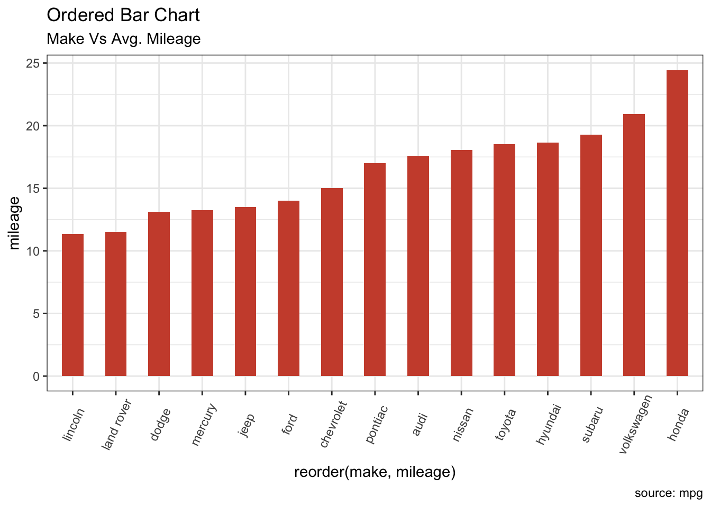
9.1.27 Stacked Bar Plot (누적 막대 그래프)
- aes 에 별도로 stat 함수를 선언하지 않으면, 자동으로 빈도수(count) 가 stat 함수가 됩니다.
- aes 의 fill 파라메터에 할당한 컬럼명이 누적 대상이 됩니다.
g <- ggplot(mpg, aes(x = manufacturer)) # x 축만 선언하게 되면 y 는 빈도수 (자동차 회사 이름 등장 횟수)
g + geom_bar(aes(fill=class), width = 0.5) + # fill 에 할당한 컬럼명이 누적 막대그래프의 누적 대상이 됩니다.
theme(axis.text.x = element_text(angle=65, vjust=0.6)) + # 텍스트 각도 지정
labs(title="Categorywise Bar Chart",
subtitle="Manufacturer of vehicles",
caption="Source: Manufacturers from 'mpg' dataset")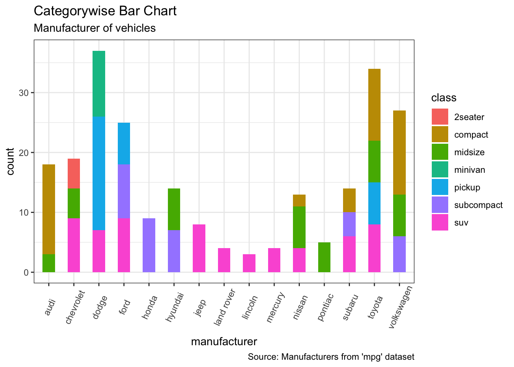
9.1.28 Facet
- 2개 변수의 상관관계 에 더해 데이터를 그룹 으로 묶어 데이터 분포를 확인하고 싶을때 사용합니다.
theme_set(theme_bw())
ggplot(data = mpg) +
geom_point(mapping = aes(x = displ, y = hwy)) +
facet_wrap(~ class, nrow = 2)
theme_set(theme_bw())
ggplot(data = mpg) +
geom_point(mapping = aes(x = displ, y = hwy)) +
facet_grid(drv ~ cyl)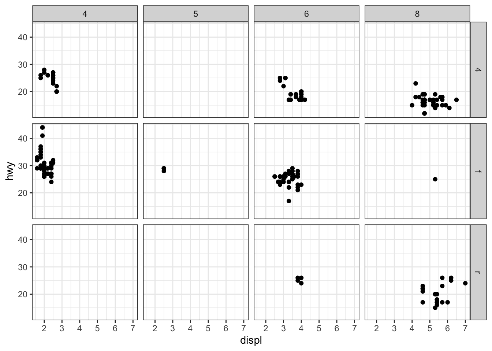
9.1.29 Position 조정
- colour 와 fill 을 사용해서 심미성 조정
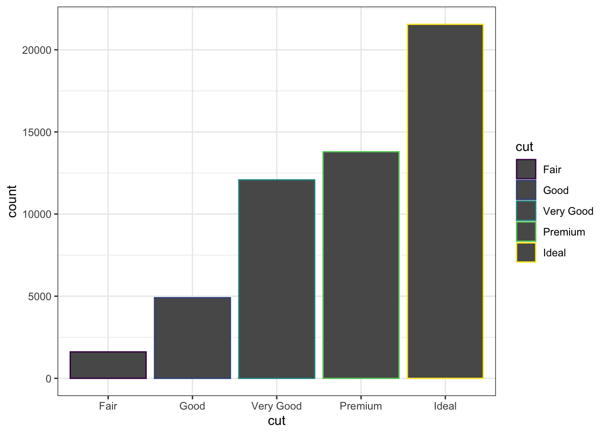
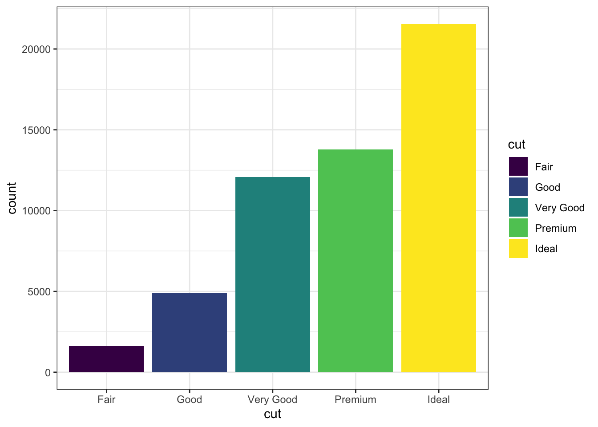
- fill 인자에 x 축에서 사용하는 변수가 아닌 다른 변수를 넣어주면 두변수를 조합해서 보여 줍니다.
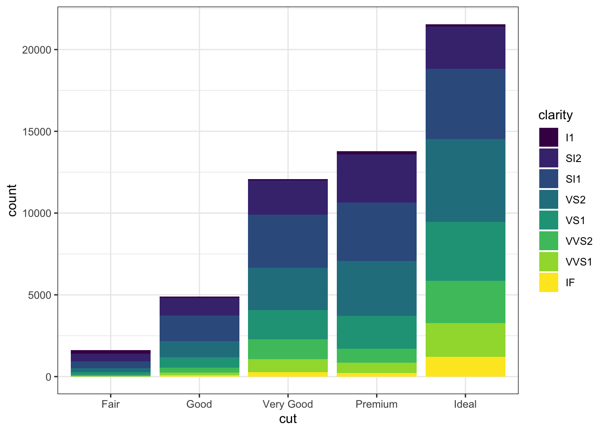
ggplot(data = diamonds, mapping = aes(x = cut, fill = clarity)) +
geom_bar(alpha = 1/5, position = "identity")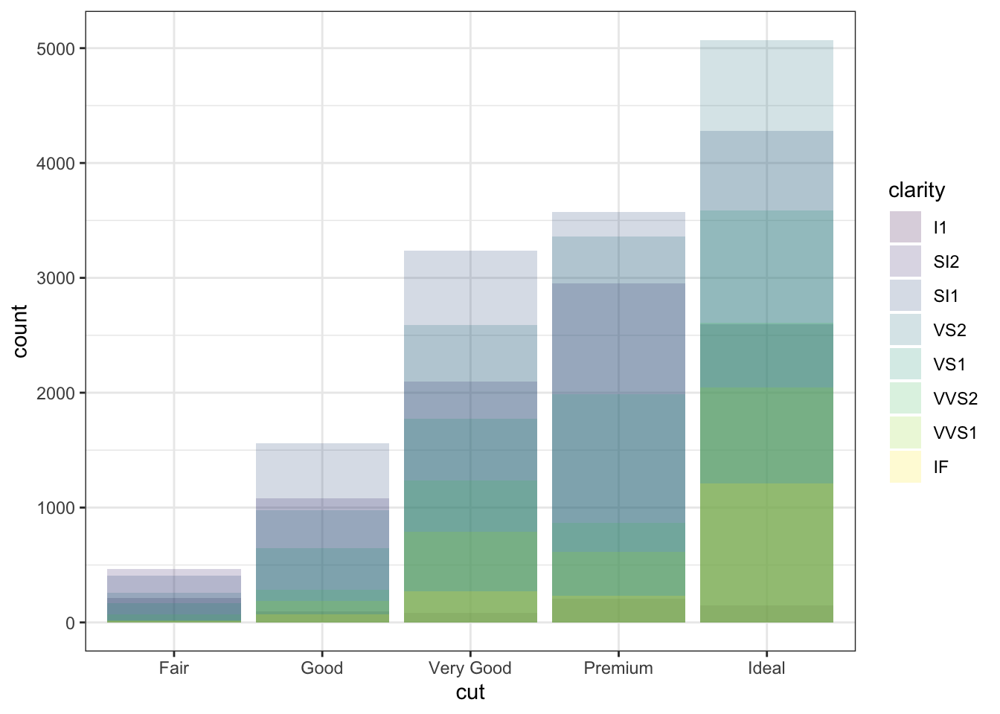
ggplot(data = diamonds, mapping = aes(x = cut, colour = clarity)) +
geom_bar(fill = NA, position = "identity")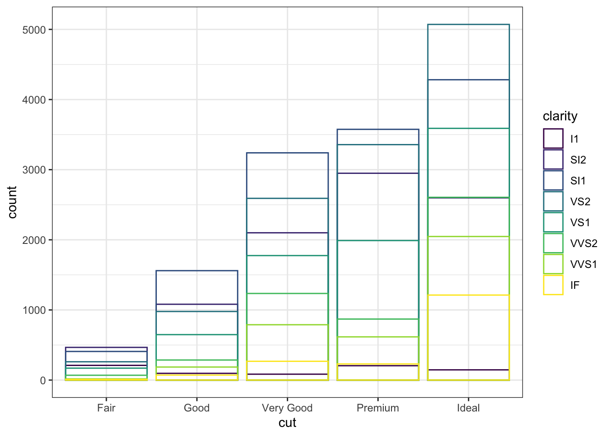
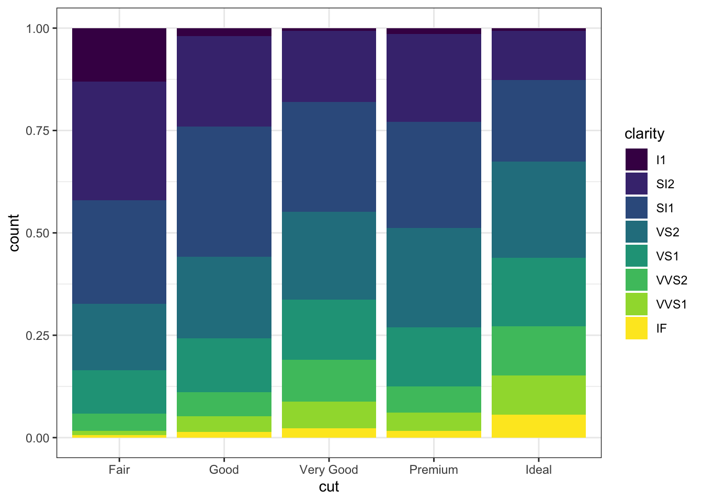
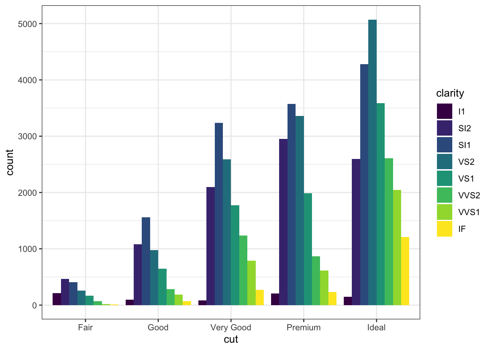
9.1.30 Pie 차트
## `summarise()` ungrouping output (override with `.groups` argument)## # A tibble: 7 x 2
## class n
## <chr> <int>
## 1 2seater 5
## 2 compact 47
## 3 midsize 41
## 4 minivan 11
## 5 pickup 33
## 6 subcompact 35
## 7 suv 62colnames(df) <- c("class", "freq")
pie <- df %>% ggplot(aes(x = "", y=freq, fill = factor(class))) +
geom_bar(width = 1, stat = "identity") +
theme(axis.line = element_blank(),
plot.title = element_text(hjust=0.5)) +
labs(fill="class",
x=NULL,
y=NULL,
title="Pie Chart of class",
caption="Source: mpg")
pie + coord_polar(theta = "y", start=0) +
geom_text(aes(x = "", y = freq/2 + c(0, cumsum(freq)[-length(freq)]),
label = paste0(round(freq / sum(freq) * 100, 1), "%")))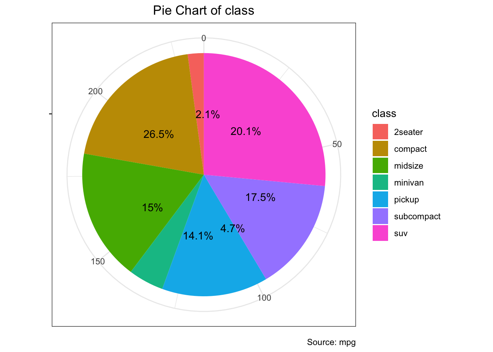
9.1.30.1 Time Series Data 시각화
- 시간에 따른 실업률을 그래프로 그려 봅시다.
## Warning: package 'ggfortify' was built under R version 4.0.2## Registered S3 method overwritten by 'ggfortify':
## method from
## fortify.table ggalttheme_set(theme_classic())
# Plot
autoplot(AirPassengers) +
labs(title="AirPassengers") +
theme(plot.title = element_text(hjust=0.5))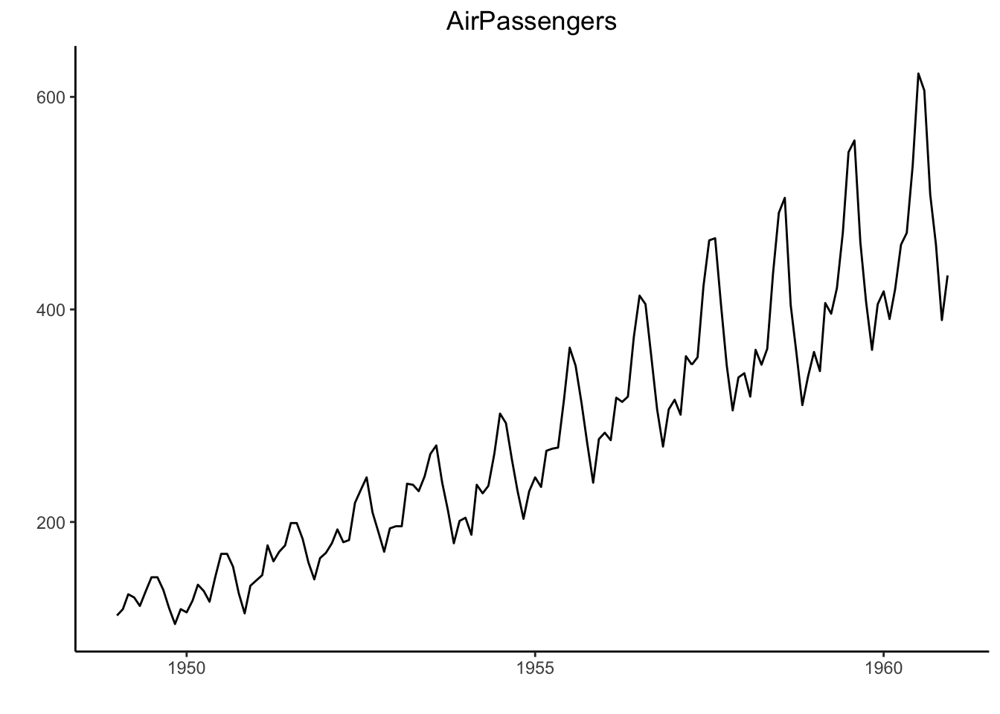
## # A tibble: 574 x 6
## date pce pop psavert uempmed unemploy
## <date> <dbl> <dbl> <dbl> <dbl> <dbl>
## 1 1967-07-01 507. 198712 12.6 4.5 2944
## 2 1967-08-01 510. 198911 12.6 4.7 2945
## 3 1967-09-01 516. 199113 11.9 4.6 2958
## 4 1967-10-01 512. 199311 12.9 4.9 3143
## 5 1967-11-01 517. 199498 12.8 4.7 3066
## 6 1967-12-01 525. 199657 11.8 4.8 3018
## 7 1968-01-01 531. 199808 11.7 5.1 2878
## 8 1968-02-01 534. 199920 12.3 4.5 3001
## 9 1968-03-01 544. 200056 11.7 4.1 2877
## 10 1968-04-01 544 200208 12.3 4.6 2709
## # … with 564 more rowsggplot(economics, aes(x=date)) +
geom_line(aes(y=unemploy)) +
labs(title="Time Series Chart",
subtitle="Returns Percentage from 'Economics' Dataset",
caption="Source: Economics",
y="unemploy %")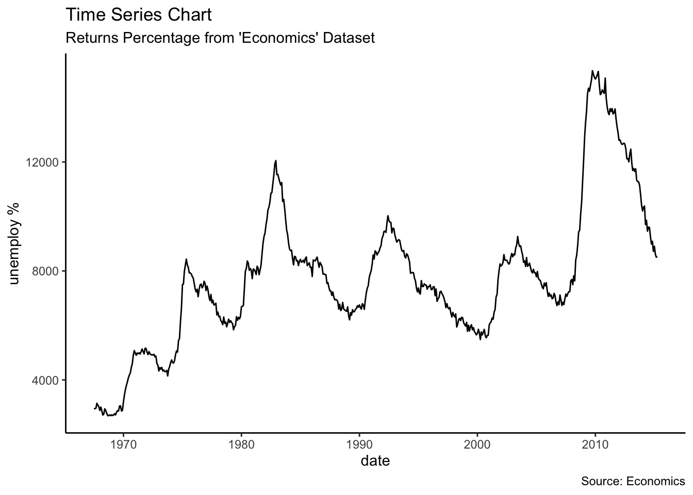
- 시즌별 데이터
- nottem 데이터는 1920 년부터 1939년 까지 노팅험 성에서 측정한 평균 기온 입니다.
- AirPassengers 데이터는 1949년 부터 1960년 까지의 월별 항공기 평균 승객수를 기록한 데이터 입니다.
## Warning: package 'forecast' was built under R version 4.0.2## Registered S3 method overwritten by 'quantmod':
## method from
## as.zoo.data.frame zoo## Registered S3 methods overwritten by 'forecast':
## method from
## autoplot.Arima ggfortify
## autoplot.acf ggfortify
## autoplot.ar ggfortify
## autoplot.bats ggfortify
## autoplot.decomposed.ts ggfortify
## autoplot.ets ggfortify
## autoplot.forecast ggfortify
## autoplot.stl ggfortify
## autoplot.ts ggfortify
## fitted.ar ggfortify
## fortify.ts ggfortify
## residuals.ar ggfortify## Jan Feb Mar Apr May Jun Jul Aug Sep Oct Nov Dec
## 1920 40.6 40.8 44.4 46.7 54.1 58.5 57.7 56.4 54.3 50.5 42.9 39.8
## 1921 44.2 39.8 45.1 47.0 54.1 58.7 66.3 59.9 57.0 54.2 39.7 42.8
## 1922 37.5 38.7 39.5 42.1 55.7 57.8 56.8 54.3 54.3 47.1 41.8 41.7
## 1923 41.8 40.1 42.9 45.8 49.2 52.7 64.2 59.6 54.4 49.2 36.3 37.6
## 1924 39.3 37.5 38.3 45.5 53.2 57.7 60.8 58.2 56.4 49.8 44.4 43.6
## 1925 40.0 40.5 40.8 45.1 53.8 59.4 63.5 61.0 53.0 50.0 38.1 36.3
## 1926 39.2 43.4 43.4 48.9 50.6 56.8 62.5 62.0 57.5 46.7 41.6 39.8
## 1927 39.4 38.5 45.3 47.1 51.7 55.0 60.4 60.5 54.7 50.3 42.3 35.2
## 1928 40.8 41.1 42.8 47.3 50.9 56.4 62.2 60.5 55.4 50.2 43.0 37.3
## 1929 34.8 31.3 41.0 43.9 53.1 56.9 62.5 60.3 59.8 49.2 42.9 41.9
## 1930 41.6 37.1 41.2 46.9 51.2 60.4 60.1 61.6 57.0 50.9 43.0 38.8
## 1931 37.1 38.4 38.4 46.5 53.5 58.4 60.6 58.2 53.8 46.6 45.5 40.6
## 1932 42.4 38.4 40.3 44.6 50.9 57.0 62.1 63.5 56.3 47.3 43.6 41.8
## 1933 36.2 39.3 44.5 48.7 54.2 60.8 65.5 64.9 60.1 50.2 42.1 35.8
## 1934 39.4 38.2 40.4 46.9 53.4 59.6 66.5 60.4 59.2 51.2 42.8 45.8
## 1935 40.0 42.6 43.5 47.1 50.0 60.5 64.6 64.0 56.8 48.6 44.2 36.4
## 1936 37.3 35.0 44.0 43.9 52.7 58.6 60.0 61.1 58.1 49.6 41.6 41.3
## 1937 40.8 41.0 38.4 47.4 54.1 58.6 61.4 61.8 56.3 50.9 41.4 37.1
## 1938 42.1 41.2 47.3 46.6 52.4 59.0 59.6 60.4 57.0 50.7 47.8 39.2
## 1939 39.4 40.9 42.4 47.8 52.4 58.0 60.7 61.8 58.2 46.7 46.6 37.8## Jan Feb Mar Apr May Jun Jul Aug Sep Oct Nov Dec
## 1949 112 118 132 129 121 135 148 148 136 119 104 118
## 1950 115 126 141 135 125 149 170 170 158 133 114 140
## 1951 145 150 178 163 172 178 199 199 184 162 146 166
## 1952 171 180 193 181 183 218 230 242 209 191 172 194
## 1953 196 196 236 235 229 243 264 272 237 211 180 201
## 1954 204 188 235 227 234 264 302 293 259 229 203 229
## 1955 242 233 267 269 270 315 364 347 312 274 237 278
## 1956 284 277 317 313 318 374 413 405 355 306 271 306
## 1957 315 301 356 348 355 422 465 467 404 347 305 336
## 1958 340 318 362 348 363 435 491 505 404 359 310 337
## 1959 360 342 406 396 420 472 548 559 463 407 362 405
## 1960 417 391 419 461 472 535 622 606 508 461 390 432# Subset data
nottem_small <- window(nottem, start=c(1920, 1), end=c(1925, 12)) # subset a smaller timewindow
# Plot
ggseasonplot(AirPassengers, year.labels = FALSE) + labs(title="Seasonal plot: International Airline Passengers")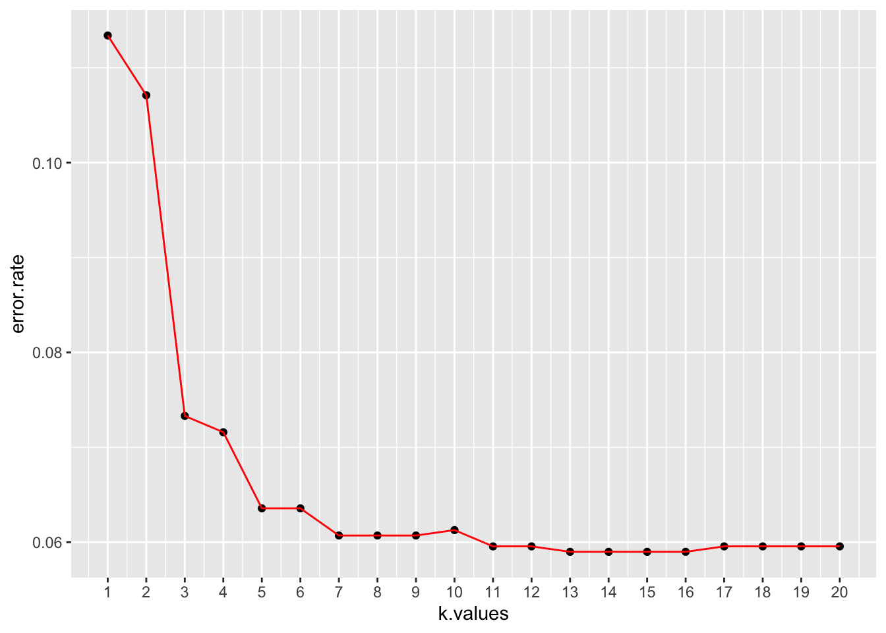
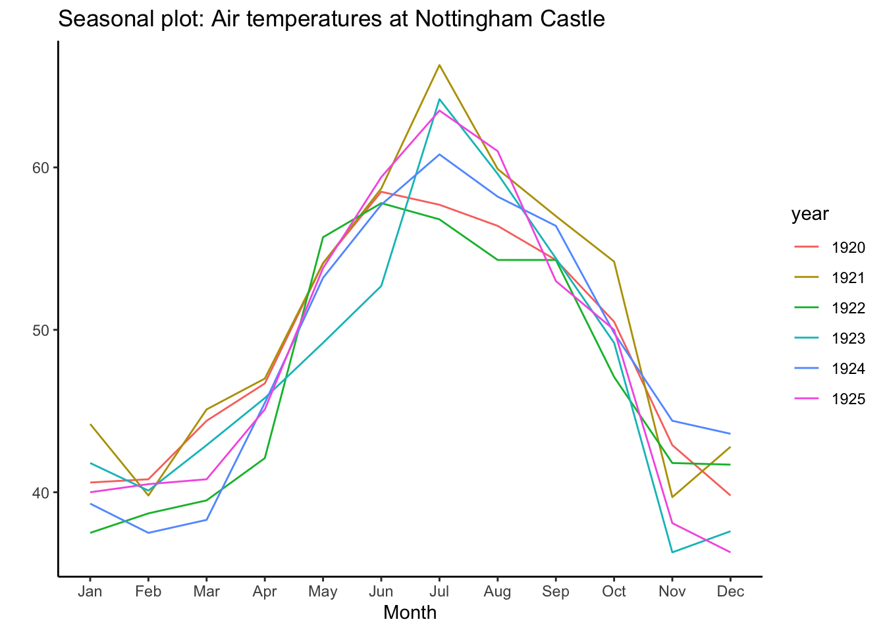
9.2 kaggle 데이터를 이용한 EDA 실습
9.2.1 bike sharing demand 데이터셋 설명
| feature | 설명 |
|---|---|
| datetime | 시간 정보 |
| season | 1:봄, 2:여름, 3:가을, 4: 겨울 |
| holiday | 휴일 유무 |
| workingday | 평일 유무 |
| weather | 1: 맑은날, 2:안개가 있거나 습도가 높은날, 3: 눈이나 비 , 4:비나 눈이 심하게 온날 |
| temp | 온도 |
| atemp | 체감온도 |
| humidity | 습도 |
| windspeed | 풍속 |
| casual | 비회원 렌트 횟수 |
| registered | 회원 렌트 횟수 |
| count | 총렌탈 횟수 |
9.2.2 기본 그래프 생성
- 데이터 불러오기
## # A tibble: 6 x 12
## datetime season holiday workingday weather temp atemp humidity
## <dttm> <dbl> <dbl> <dbl> <dbl> <dbl> <dbl> <dbl>
## 1 2011-01-01 00:00:00 1 0 0 1 9.84 14.4 81
## 2 2011-01-01 01:00:00 1 0 0 1 9.02 13.6 80
## 3 2011-01-01 02:00:00 1 0 0 1 9.02 13.6 80
## 4 2011-01-01 03:00:00 1 0 0 1 9.84 14.4 75
## 5 2011-01-01 04:00:00 1 0 0 1 9.84 14.4 75
## 6 2011-01-01 05:00:00 1 0 0 2 9.84 12.9 75
## # … with 4 more variables: windspeed <dbl>, casual <dbl>, registered <dbl>,
## # count <dbl>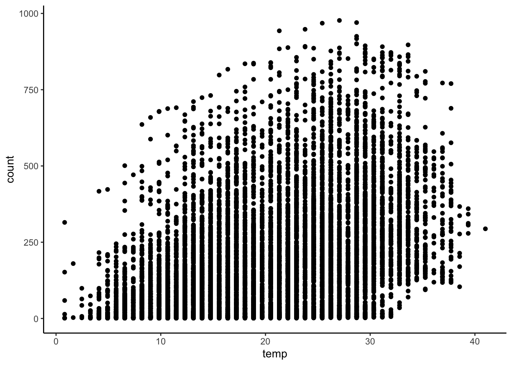
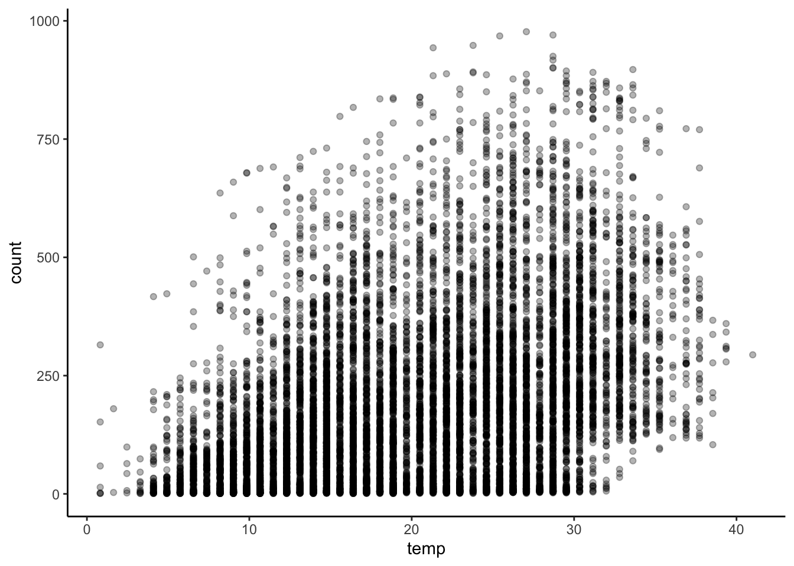
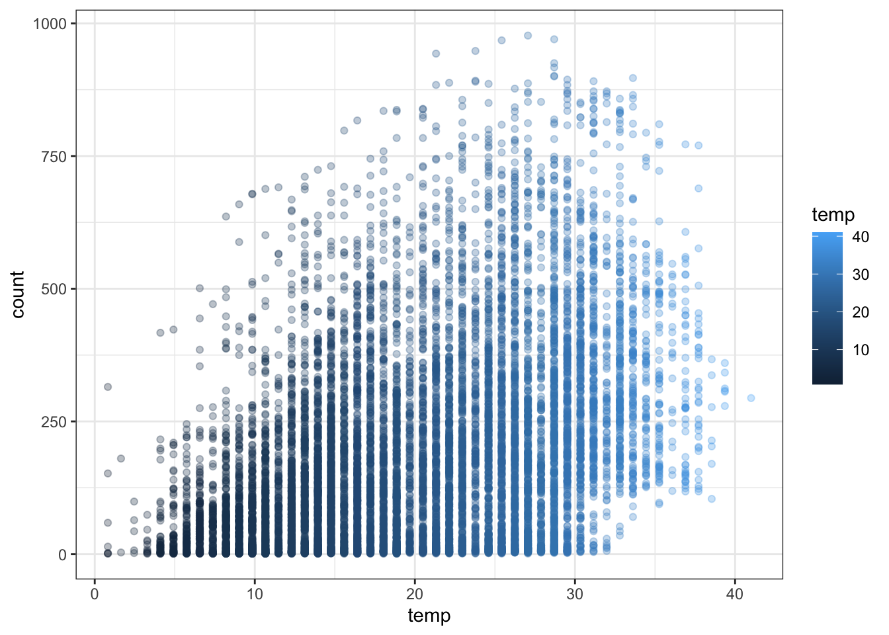
pl <- ggplot(bike, aes(datetime, count)) +
geom_point(aes(color=temp), alpha=0.5) + theme_bw()
pl + scale_color_continuous(low='#55D8CE', high='#FF6E2E') +
theme_bw()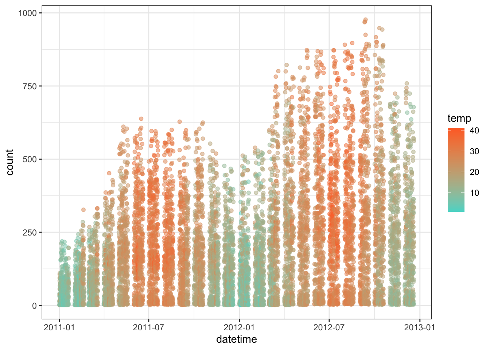
## temp count
## temp 1.0000000 0.3944536
## count 0.3944536 1.0000000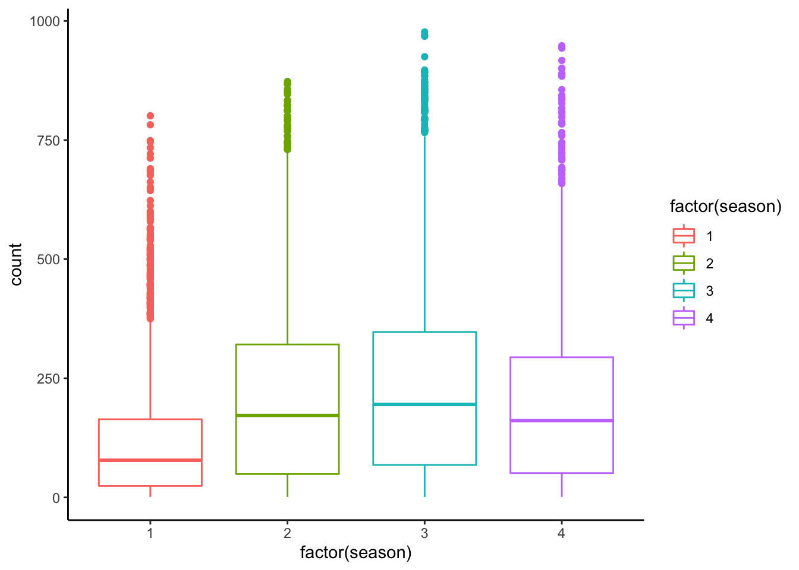
## # A tibble: 10,886 x 13
## datetime season holiday workingday weather temp atemp humidity
## <dttm> <dbl> <dbl> <dbl> <dbl> <dbl> <dbl> <dbl>
## 1 2011-01-01 00:00:00 1 0 0 1 9.84 14.4 81
## 2 2011-01-01 01:00:00 1 0 0 1 9.02 13.6 80
## 3 2011-01-01 02:00:00 1 0 0 1 9.02 13.6 80
## 4 2011-01-01 03:00:00 1 0 0 1 9.84 14.4 75
## 5 2011-01-01 04:00:00 1 0 0 1 9.84 14.4 75
## 6 2011-01-01 05:00:00 1 0 0 2 9.84 12.9 75
## 7 2011-01-01 06:00:00 1 0 0 1 9.02 13.6 80
## 8 2011-01-01 07:00:00 1 0 0 1 8.2 12.9 86
## 9 2011-01-01 08:00:00 1 0 0 1 9.84 14.4 75
## 10 2011-01-01 09:00:00 1 0 0 1 13.1 17.4 76
## # … with 10,876 more rows, and 5 more variables: windspeed <dbl>, casual <dbl>,
## # registered <dbl>, count <dbl>, hour <chr>## feature eng
pl <- ggplot(filter(bike, workingday==1), aes(hour,count))
pl <- pl + geom_point()
print(pl)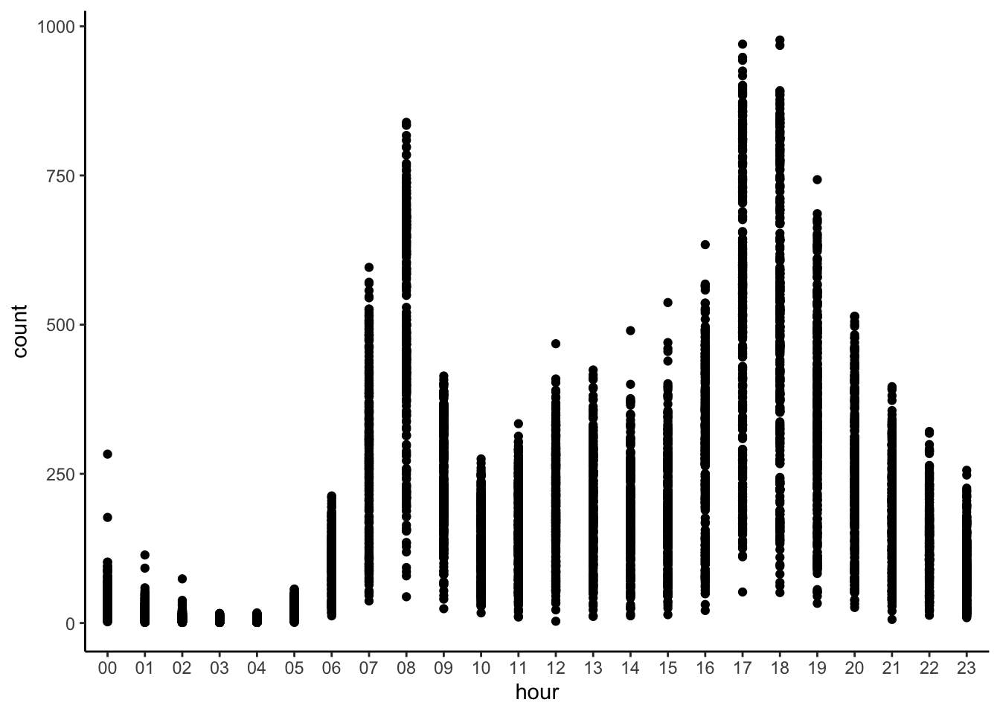
9.2.3 ggthemr 적용하기
#devtools::install_github('cttobin/ggthemr') #라이브러리 설치
#library(ggthemr)
#ggthemr("dust") # 테마를 세션에 설정
#midwest %>% ggplot(aes(x=area, y=poptotal)) +
# geom_point(aes(col=state), size=3) +
# geom_smooth(method="lm", col="firebrick", size=2) +
# coord_cartesian(xlim=c(0, 0.1), ylim=c(0, 1000000)) +
# labs(title="Area Vs Population", subtitle="From midwest dataset", y="Population", x="Area", caption="Midwest Demographics")
#ggthemr_reset() # ggthemr 의 테마 삭제